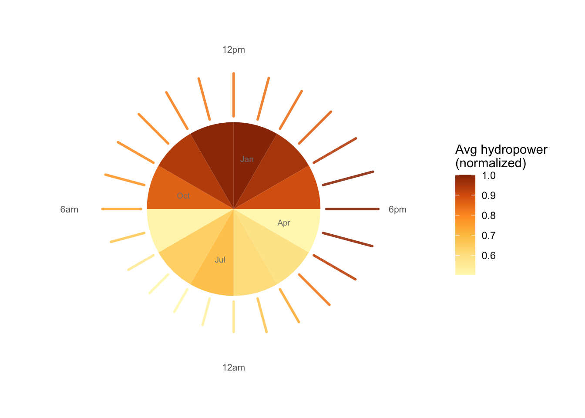

Show code
library(haven)
library(lubridate)
dta <- read_dta(here::here("posts/hydro_infographic/data/marginal-generation-offsets-data.dta"))
inner_radius <- 1.5
inner_month <- dta %>%
mutate(
month_num = month(dt),
month_lab = factor(month.abb[month_num], levels = month.abb)
) %>%
group_by(month_lab) %>%
summarise(h_mean = mean(h, na.rm = TRUE), .groups = "drop") %>%
mutate(h_norm = h_mean / max(h_mean, na.rm = TRUE))
month_slots <- tibble(
month_lab = factor(month.abb, levels = month.abb),
x_center = seq(1, 23, by = 2)
)
inner_month_long <- inner_month %>% inner_join(month_slots, by = "month_lab")
outer_hour <- dta %>%
mutate(hour = hour(dt)) %>%
group_by(hour) %>%
summarise(h_mean = mean(h, na.rm = TRUE), .groups = "drop") %>%
mutate(
h_norm = h_mean / max(h_mean, na.rm = TRUE),
hour_rot = (hour - 12) %% 24,
inner_r = inner_radius + 0.1,
outer_r = inner_r + 0.9 * h_norm
)
label_r <- inner_radius + 1.15
time_labels <- tibble(
hour_rot = c(0, 6, 12, 18),
label = c("12pm", "6pm", "12am", "6am"),
hjust = c(0.5, -0.1, 0.5, 1.1),
vjust = c(-0.5, 0.5, 1.2, 0.5)
)
month_labels <- tibble(
x_center = c(1, 7, 13, 19),
y_pos = inner_radius * 0.6,
label = c("Jan", "Apr", "Jul", "Oct")
)
ggplot() +
geom_col(
data = inner_month_long,
aes(x = x_center, y = inner_radius, fill = h_norm),
width = 2,
color = NA
) +
geom_segment(
data = outer_hour,
aes(x = hour_rot, xend = hour_rot, y = inner_r, yend = outer_r, color = h_norm),
lineend = "round",
linewidth = 1.0,
alpha = 0.9
) +
geom_text(
data = time_labels,
aes(x = hour_rot, y = label_r, label = label),
hjust = time_labels$hjust,
vjust = time_labels$vjust,
size = 2.8,
color = "gray40"
) +
geom_text(
data = month_labels,
aes(x = x_center, y = y_pos, label = label),
size = 2.5,
color = "gray50"
) +
coord_polar(theta = "x", start = 0) +
scale_colour_gradientn(
colours = c("#fff7bc", "#fee391", "#fec44f", "#fe9929", "#d95f0e", "#993404"),
name = "Avg hydropower\n(normalized)"
) +
scale_fill_gradientn(
colours = c("#fff7bc", "#fee391", "#fec44f", "#fe9929", "#d95f0e", "#993404"),
guide = "none"
) +
scale_y_continuous(limits = c(0, inner_radius + 1.3), breaks = NULL) +
labs(
title = NULL,
subtitle = NULL,
x = NULL,
y = NULL
) +
theme_minimal(base_size = 11) +
theme(
legend.position = "right",
axis.text = element_blank(),
axis.ticks = element_blank(),
panel.grid.minor = element_blank(),
panel.grid.major = element_blank()
)